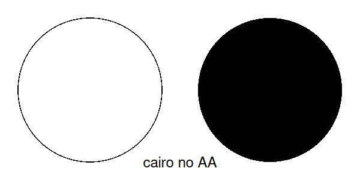
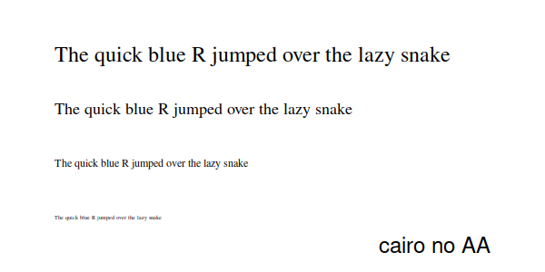

library(ragg)
library(grid)
library(magick)
img_zoom <- function(path) {
img <- image_read(path)
img <- image_crop(img, '300x150+150+75')
img <- image_sample(img, '600x300')
img
}This vignette tries to compare the quality of the output of ragg, with that of cairo and, if the system supports it, Xlib (Xlib is unix only). As quality is, to a certain extend, subjective, the vignette will be short on conclusions and filled with examples.
The present version of this vignette has been compiled on a system without the X11 device. The benchmarkings will thus omit this device, though the text will still refer to it.
Scope
There are mainly two areas of high importance when discussing graphic device quality: Shape rendering (fill and stroke) and text rendering. Both of these are highly dependent on the quality of anti-aliasing if any. Apart from that we will also look into alpha blending and raster interpolation.
Shape rendering
The examples here are relevant for rendering of all different types of shapes, be it lines or polygons. Lines obviously don’t have fill, so only the stroke rendering will have relevance here. We chose to use a circle for this as it provides a nice sampling of uneven edges.
circle_quality <- function(device, name, file, ...) {
device(file, width = 600, height = 300, ...)
grid.circle(
x = c(0.25, 0.75),
r = 0.4,
gp = gpar(col = c('black', NA), fill = c(NA, 'black'), lwd = 2)
)
grid.text(y = 0.1, label = name, gp = gpar(cex = 2))
invisible(dev.off())
}
ragg_circle <- knitr::fig_path('.png')
circle_quality(agg_png, 'ragg', ragg_circle)
knitr::include_graphics(ragg_circle)

cairo_none_circle <- knitr::fig_path('.png')
circle_quality(png, 'cairo no AA', cairo_none_circle,
type = 'cairo', antialias = 'none')
knitr::include_graphics(cairo_none_circle)
cairo_gray_circle <- knitr::fig_path('.png')
circle_quality(png, 'cairo gray AA', cairo_gray_circle,
type = 'cairo', antialias = 'gray')
knitr::include_graphics(cairo_gray_circle)

cairo_subpixel_circle <- knitr::fig_path('.png')
circle_quality(png, 'cairo subpixel AA', cairo_subpixel_circle,
type = 'cairo', antialias = 'subpixel')
knitr::include_graphics(cairo_subpixel_circle)Observations
ragg is the only device that provides anti-aliasing of fill, which results in obvious quality differences. The reason for not doing so in cairo is presumably to avoid artefacts when shapes are touching each other where anti-aliasing can result in a thin edge between the two shapes instead of a contiguous colour. This is a real issue, but I personally don’t agree that it should be allowed to degrade the overall quality of the device, hence the reason for not following this approach in ragg.
Xlib (if that is available on your system), provides completely non
anti-aliased output and so does cairo with
antialias = 'none'. It is surprising that Xlib appears to
have a better stroke rendering than cairo without anti-aliasing.
Further, the difference between 'gray' and
'subpixel' antialiasing is not visible to the naked eye,
nor with a 2x zoom.
Text
Text is a difficult thing to handle for a graphic device, both in terms of finding system fonts, and in terms of rendering. Often the rendering is offloaded to another library (e.g. freetype), which will provide a bitmap representation to blend into the device. This approach is often good for horizontal or vertical text, but struggle with other rotations. Here we will test text rendering at different sizes and at a 27° counter-clockwise rotation. We will use the the system provided serif font as it provides a more complex task than a sans-serif one.
text_quality <- function(device, name, file, rotation = 0, ...) {
text <- 'The quick blue R jumped over the lazy snake'
vp <- viewport(angle = rotation)
device(file, width = 600, height = 300, ...)
pushViewport(vp)
grid.text(text, x = 0.1, y = 0.2, just = 'left', gp = gpar(fontfamily = 'serif', cex = 0.5))
grid.text(text, x = 0.1, y = 0.4, just = 'left', gp = gpar(fontfamily = 'serif', cex = 1))
grid.text(text, x = 0.1, y = 0.6, just = 'left', gp = gpar(fontfamily = 'serif', cex = 1.5))
grid.text(text, x = 0.1, y = 0.8, just = 'left', gp = gpar(fontfamily = 'serif', cex = 2))
popViewport()
grid.text(x = 0.9, y = 0.1, label = name, just = 'right', gp = gpar(cex = 2))
invisible(dev.off())
}
ragg_text <- knitr::fig_path('.png')
text_quality(agg_png, 'ragg', ragg_text)
knitr::include_graphics(ragg_text)
ragg_text_rot <- knitr::fig_path('.png')
text_quality(agg_png, 'ragg', ragg_text_rot, rotation = 27)
knitr::include_graphics(ragg_text_rot)
cairo_none_text <- knitr::fig_path('.png')
text_quality(png, 'cairo no AA', cairo_none_text,
type = 'cairo', antialias = 'none')
knitr::include_graphics(cairo_none_text)
cairo_none_text_rot <- knitr::fig_path('.png')
text_quality(png, 'cairo no AA', cairo_none_text_rot, rotation = 27,
type = 'cairo', antialias = 'none')
knitr::include_graphics(cairo_none_text_rot)
cairo_gray_text <- knitr::fig_path('.png')
text_quality(png, 'cairo gray AA', cairo_gray_text,
type = 'cairo', antialias = 'gray')
knitr::include_graphics(cairo_gray_text)

cairo_gray_text_rot <- knitr::fig_path('.png')
text_quality(png, 'cairo gray AA', cairo_gray_text_rot, rotation = 27,
type = 'cairo', antialias = 'gray')
knitr::include_graphics(cairo_gray_text_rot)

cairo_subpixel_text <- knitr::fig_path('.png')
text_quality(png, 'cairo subpixel AA', cairo_subpixel_text,
type = 'cairo', antialias = 'subpixel')
knitr::include_graphics(cairo_subpixel_text)
cairo_subpixel_text_rot <- knitr::fig_path('.png')
text_quality(png, 'cairo subpixel AA', cairo_subpixel_text_rot, rotation = 27,
type = 'cairo', antialias = 'subpixel')
knitr::include_graphics(cairo_subpixel_text_rot)
Observations
Font handling is hard… Setting the font to 'serif' means
different things to different devices and being more specific results in
some devices not being able to find the font. ragg exclusively uses the
system fonts so whatever your OS defines as the base serif type it will
pick up. Cairo goes through the internal R database to pick a slightly
different font. Xlib… well I can’t comment on what it is doing, but it
appears to pick something completely different from the X11 system.
Regarding quality, I don’t think I have to be mean and mention Xlib, so
let’s look at ragg and cairo. Ignoring for a fact that they have used
two different fonts, we can see some differences and some interesting
stuff. First, cairo don’t care about the anti-alias setting when it
renders fonts. My guess is that it will always ask for an 8-bit pixelmap
from the font engine (probably freetype) and use that. This ensures high
quality fonts no matter the settings. The text appears quite heavy,
which (unless this is a feature of the font) indicates that cairo does
not gamma-correct the pixelmap before blending it into the image.
Correct gamma correction of font is quite important, so if that is the
case it is quite sad. Another thing we notice is that cairo uses the
pixelmaps even for rotated text. This results in jagged baseline and
uneven kerning when plotting rotated text. ragg only uses pixelmaps when
plotting axis-aligned text. For rotated text it will convert the glyphs
to polygons and render them using the built-in rasterizer ensuring an
even baseline and kerning. This means plotting rotated text is slightly
less performant, at the cost of looking good — I can live with that
trade-off.
Alpha blending
How transparent colours are combined is not necessarily equal among devices. The biggest divide is on whether to use premultiplied colours or not. With premultiplied colours the red, green, and blue intensity is weighted by the alpha directly, instead of alpha simply being an additional value. Using premultiplied colours is the only way to get correct alpha blending. As the Xlib device doesn’t support transparent colours it will be exempt from this comparison even on systems that have it. Further, as alpha blending is not related to anti-aliasing, we will simply compare ragg against a single cairo setup.
blend_quality <- function(device, name, file, ...) {
device(file, width = 600, height = 300, ...)
grid.rect(x = 0.35, y = 0.4, width = 0.5, height = 0.5, gp = gpar(fill = '#FF0000'))
grid.rect(x = 0.65, y = 0.6, width = 0.5, height = 0.5, gp = gpar(fill = '#00FF001A'))
grid.text(x = 0.9, y = 0.1, label = name, just = 'right', gp = gpar(cex = 2))
invisible(dev.off())
}
ragg_blend <- knitr::fig_path('.png')
blend_quality(agg_png, 'ragg', ragg_blend)
knitr::include_graphics(ragg_blend)
cairo_blend <- knitr::fig_path('.png')
blend_quality(png, 'cairo', cairo_blend, type = 'cairo')
knitr::include_graphics(cairo_blend)
Observations
Nothing much to say — both devices handle alpha blending correctly (see here to understand what this test was about).
Raster
The main way raster plotting can get influence by the device is in how the image gets interpolated during scaling, which will be briefly compared here.
raster_quality <- function(device, name, file, ...) {
reds <- matrix(hcl(0, 80, seq(50, 80, 10)),
nrow = 4, ncol = 5)
device(file, width = 600, height = 300, ...)
grid.raster(reds, vp = viewport(0.25, 0.25, 0.5, 0.5, angle = 27))
grid.raster(reds, interpolate = FALSE,
vp = viewport(0.75, 0.75, 0.5, 0.5, angle = 27))
grid.text(x = 0.9, y = 0.1, label = name, just = 'right', gp = gpar(cex = 2))
invisible(dev.off())
}
ragg_raster <- knitr::fig_path('.png')
raster_quality(agg_png, 'ragg', ragg_raster)
knitr::include_graphics(ragg_raster)
cairo_raster <- knitr::fig_path('.png')
raster_quality(png, 'cairo', cairo_raster, type = 'cairo')
knitr::include_graphics(cairo_raster)Conclusion
When it comes to raster quality, the only real contenders are ragg and anti-aliased cairo, as lack of anti-aliasing has clear detrimental effect on output quality. As there appears to be no real difference in quality between cairo’s two anti-aliasing modes, the question basically boils down to cairo vs ragg. While for the most part the two rendering systems provide comparable output, there are two areas where ragg takes the lead, quality-wise: rendering of fill, and rendering of rotated text. If these areas are of interest to you then ragg will be the obvious choice.
Session info
sessioninfo::session_info()
#> ─ Session info ─────────────────────────────────────────────────────────
#> setting value
#> version R version 4.3.2 (2023-10-31)
#> os Ubuntu 22.04.3 LTS
#> system x86_64, linux-gnu
#> ui X11
#> language en
#> collate C.UTF-8
#> ctype C.UTF-8
#> tz UTC
#> date 2023-11-20
#> pandoc 2.19.2 @ /usr/bin/ (via rmarkdown)
#>
#> ─ Packages ─────────────────────────────────────────────────────────────
#> package * version date (UTC) lib source
#> bslib 0.5.1 2023-08-11 [1] RSPM
#> cachem 1.0.8 2023-05-01 [1] RSPM
#> cli 3.6.1 2023-03-23 [1] RSPM
#> desc 1.4.2 2022-09-08 [1] RSPM
#> digest 0.6.33 2023-07-07 [1] RSPM
#> evaluate 0.23 2023-11-01 [1] RSPM
#> fastmap 1.1.1 2023-02-24 [1] RSPM
#> fs 1.6.3 2023-07-20 [1] RSPM
#> glue 1.6.2 2022-02-24 [1] RSPM
#> highr 0.10 2022-12-22 [1] RSPM
#> htmltools 0.5.7 2023-11-03 [1] RSPM
#> jquerylib 0.1.4 2021-04-26 [1] RSPM
#> jsonlite 1.8.7 2023-06-29 [1] RSPM
#> knitr 1.45 2023-10-30 [1] RSPM
#> lifecycle 1.0.4 2023-11-07 [1] RSPM
#> magick * 2.8.1 2023-10-22 [1] RSPM
#> magrittr 2.0.3 2022-03-30 [1] RSPM
#> memoise 2.0.1 2021-11-26 [1] RSPM
#> pkgdown 2.0.7 2022-12-14 [1] RSPM
#> purrr 1.0.2 2023-08-10 [1] RSPM
#> R6 2.5.1 2021-08-19 [1] RSPM
#> ragg * 1.2.6.9000 2023-11-20 [1] local
#> Rcpp 1.0.11 2023-07-06 [1] RSPM
#> rlang 1.1.2 2023-11-04 [1] RSPM
#> rmarkdown 2.25 2023-09-18 [1] RSPM
#> rprojroot 2.0.4 2023-11-05 [1] RSPM
#> sass 0.4.7 2023-07-15 [1] RSPM
#> sessioninfo 1.2.2 2021-12-06 [1] any (@1.2.2)
#> stringi 1.8.1 2023-11-13 [1] RSPM
#> stringr 1.5.1 2023-11-14 [1] RSPM
#> systemfonts 1.0.5 2023-10-09 [1] RSPM
#> textshaping 0.3.7 2023-10-09 [1] RSPM
#> vctrs 0.6.4 2023-10-12 [1] RSPM
#> xfun 0.41 2023-11-01 [1] RSPM
#> yaml 2.3.7 2023-01-23 [1] RSPM
#>
#> [1] /home/runner/work/_temp/Library
#> [2] /opt/R/4.3.2/lib/R/site-library
#> [3] /opt/R/4.3.2/lib/R/library
#>
#> ────────────────────────────────────────────────────────────────────────